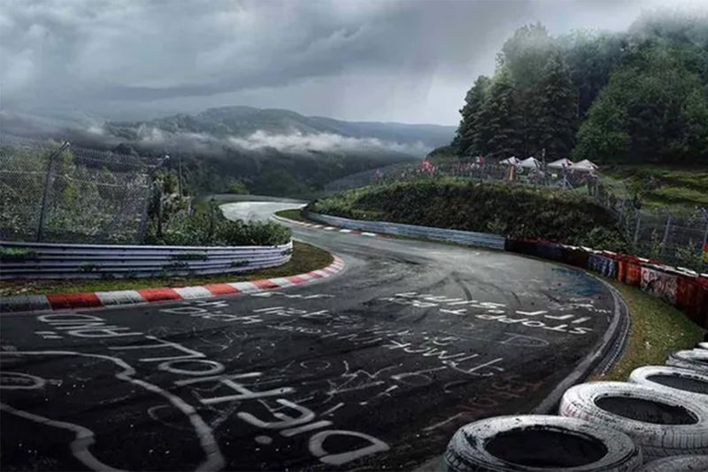

El circuito de Nürburgring o Nordschleife, como quieras llamarlo, es uno de los más populares templos del automovilismo a nivel mundial.
Todos coinciden en llamarlo, eso sí, el «Infierno Verde», por estar rodeado de árboles y vegetación alrededor de todo su recorrido
| Nombre | Edad | Ciudad |
|---|---|---|
| Juan | 25 | Madrid |
| María | 30 | Barcelona |
| Carlos | 28 | Valencia |